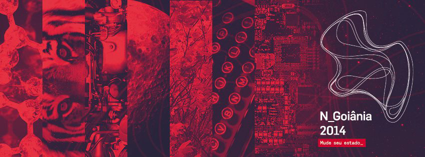
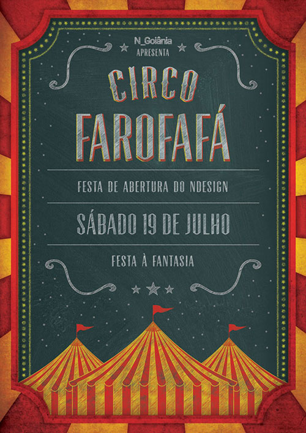
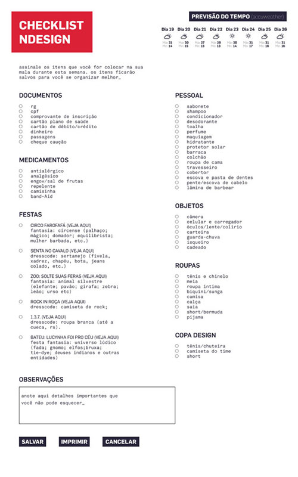

N_Goiânia 2014
Sobre o Evento
NDesign é o Encontro Nacional dos Estudantes de Design, um evento itinerante e anual, de caráter acadêmico, científico, cultural e político, que não possui fins lucrativos e que promove a integração entre estudantes de design do Brasil, além de aprofundar o debate crítico entre acadêmicos dessa área e em diversos setores da sociedade. Atualmente é o maior evento de Design do país e um dos maiores da América Latina.
Em Julho de 2014 o NDesign aconteceu pela primeira vez na capital goiana, e, antes de um encontro de designers ou de estudantes, o N_Goiânia 2014 propôs um encontro de pessoas que são constituídas pelas mesmas substâncias em sua natureza, mas que recebem influências externas – bagagem cultural, educação, processo de formação diferentes etc.; moldando a sua personalidade e seu caráter de formas distintas.
Existem inúmeros estados presentes, possíveis e acessíveis para cada pessoa. Mudar de estado é também mudar a si mesmo de acordo com as experiências que o encontro traz sejam elas premeditadas ou espontâneas. Estar imerso em diversas realidades de vários indivíduos nos forma não apenas como profissionais, mas também como pessoas.
Quantos estados você pode atingir? Qual é o seu estado inédito? Deseja-se que o NDesign funcione como um potencializador de mudanças, acelerando os processos criados pelas atividades do evento e também pelos próprios participantes.
O Trabalho
Como integrante da Comissão Organizadora, fiz parte da célula de Identidade Visual, que era a divisão responsável por todo material gráfico do evento, envolvendo a produção de cartazes, arte para postagens nas redes sociais, projetos de patrocínio e etc.
*Obs.: A Identidade Visual do evento foi criada por Ramom Madeira e Gabriella Bitencourt.
Dentre as principais peças gráficas que fiz destaco as seguintes:
Projeto de Candidatura
Responsável pelo Projeto Gráfico (juntamente com Gabriella Bitencourt e Pedro Henrique) e a diagramação do projeto em si.
Cartaz Conceito

Cartaz que além de utilizar imagens referentes ao conceito de mudança de estado, foram aplicadas fotos de pontos importantes da capital goiana (crédito das fotos: Daniel Barros). Além disso a divisão do cartaz foi baseada no desenho característico do encontro das principais avenidas do centro da cidade:
CARTAZ CIRCO FAROFAFÁ
Cartaz da Primeira Festa do N_Goiânia: Circo Farofafá. Foi passado um briefing pela célula de integração que pedia principalmente um cartaz alegre nas cores amarelo e vermelho. A inspiração do cartaz foi tirada basicamente das placas de quadro de giz existentes em muitos dos circos que fui.
Checklist
Como de costume entre as comissões, é lançado um checklist do que levar para os eventos alguns dias antes deles acontecerem. Mas o que acredito ser o diferencial deste checklist é o fato de adicionar junto a ele a previsão do tempo para aqueles dias do encontro, o que não acontecia antes. Desta forma o encontrista poderia saber o que esperar do clima na hora de arrumar as malas. O Checklist para o N_Goiânia em si foi ainda mais inovador, além de ser diponibilizado um impresso, existia também uma versão online em que o encontrista com o próprio cadastro poderia “checar” os itens, salvar as informações e voltar a utiliza-lo em um outro momento.
